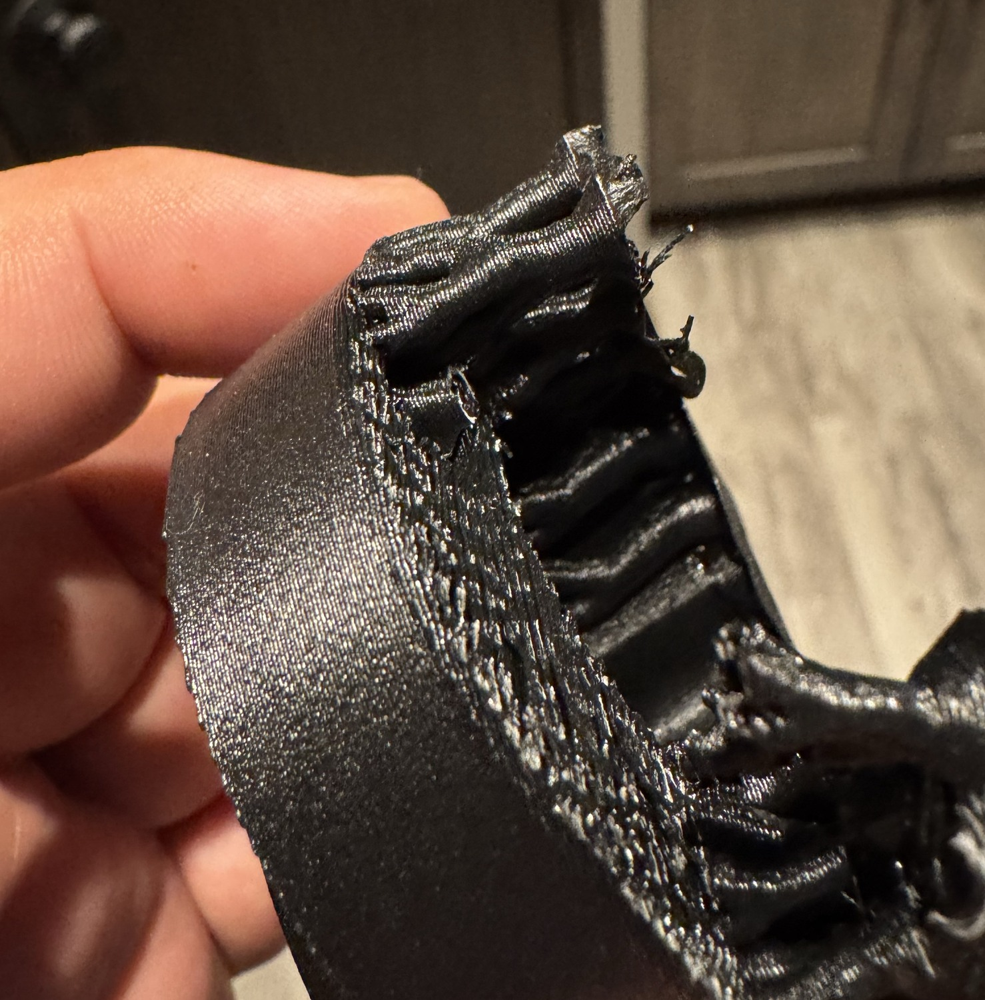
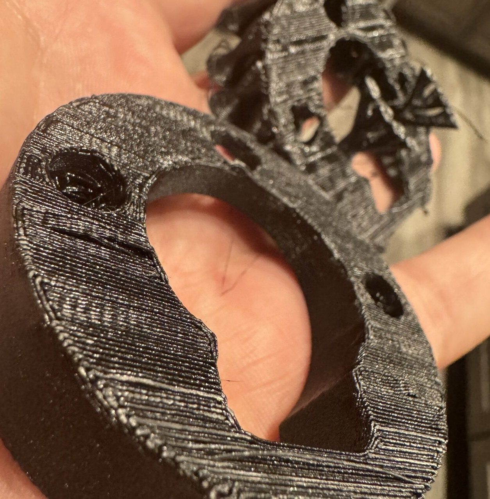

PET-GF
Support D and the faucet
Use the shared dense contact recipe. The part’s geometry controls the roots, access and release.


| Top separation | {{petgf:/support_top_z_distance}} mm |
|---|---|
| Top interface courses | {{petgf:/support_interface_top_layers}} |
| Interface line spacing | {{petgf:/support_interface_spacing}} mm |
| Bridge flow ratio | {{petgf:/bridge_flow}} |
| Bridge speed | {{petgf:/bridge_speed/0}} mm/s |
Keep the release geometry
In the selected base recipes, Slim trees and segmented outer fins feed a shared dense band at the rim. The first supported outer perimeter follows the inclined rim. Use the tip’s own shoulder, dispense-face and outlet treatment.
Bridge the insert shoulders and blind pilots. Review the slice with the recesses clear for the hardware.
Support D rollout and full settings · Industrial recipe · Sculpted recipe · Inclined support result · Rim release result